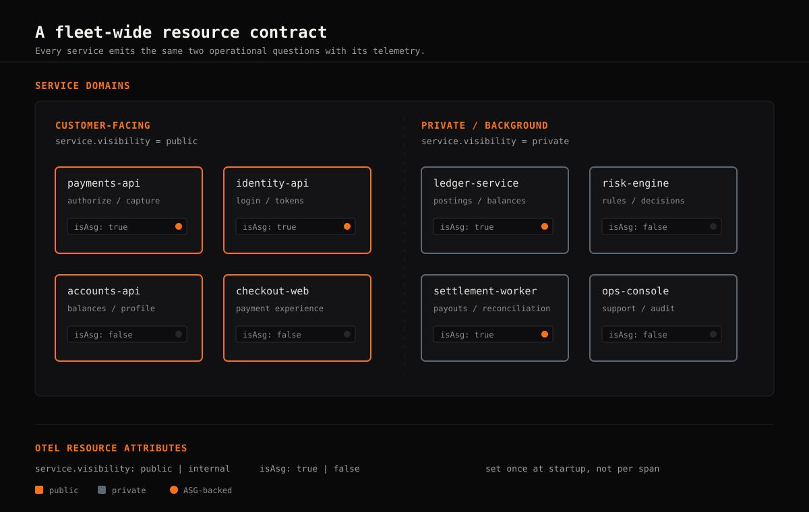
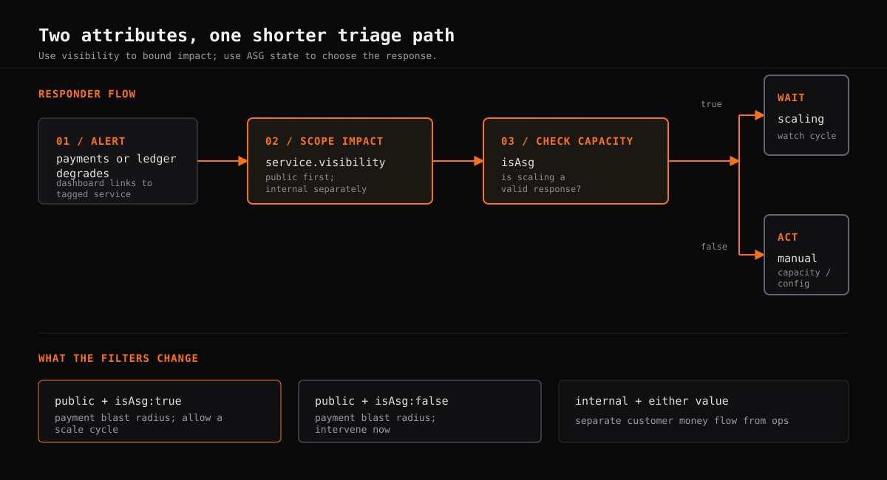
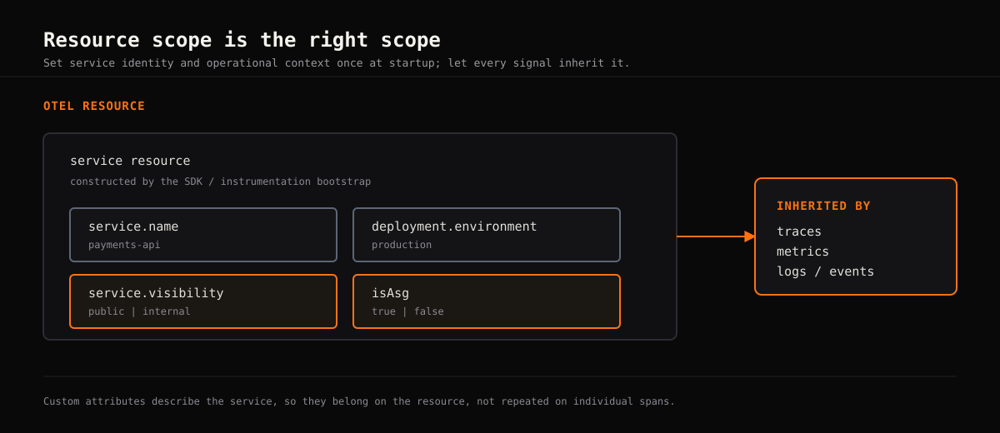

Most OpenTelemetry writeups walk through instrumenting a single service: add the SDK, export some spans, and look at a trace in a UI. That is the easy part. The harder problem appears when dozens of services span payments, identity, accounts, risk, ledger, and settlement, and someone triaging an incident at 2am needs to make sense of the telemetry quickly.
That is where custom resource attributes earn their keep. In this rollout, the two useful questions are simple: is the service public or private? And is it backed by an Auto Scaling Group?
The problem with default OTel attributes alone
OpenTelemetry semantic conventions give us a solid baseline:
service.name, service.namespace,
deployment.environment, and more. That is enough to
identify what emitted a signal. It is not enough to answer the
questions an on-call engineer asks first:
- Is this payment or identity service customer-facing, or is it a private back-office dependency?
- Is it running on infrastructure that can scale, or is it fixed capacity?
- Should this alert wait through a scaling cycle, or does it need manual intervention now?
Without that context in the telemetry, engineers cross-reference a wiki, a runbook, or someone's memory. Those are slow dependencies during an incident.

service.visibility: public versus private
Across a fintech fleet, not every alert deserves the same urgency. A latency spike on a public payments or identity API has a different blast radius from a private reporting or operations job, even if the raw numbers look similar.
Tagging each service with service.visibility, using
controlled values such as public and
private, lets teams filter dashboards by blast radius,
tier alerting, and prioritize investigation. Public service alerts can
follow the faster escalation path while private service degradation is
assessed separately.
The attribute is simple. The value comes from applying it consistently across every service, rather than retrofitting it after the next payments incident exposes the gap.
isAsg: knowing what scaling actually means
Some services sit behind an Auto Scaling Group and can absorb load by adding instances. Others run as a fixed set of instances or pods, where a traffic spike means resource pressure until someone intervenes.
Tagging services with isAsg as true or
false gives the responder an immediate operational cue. A
CPU alert on an ASG-backed payments API can reasonably wait through a
scaling cycle. The same alert on a fixed-capacity ledger or risk
service probably should not.
This distinction also feeds alerting logic: a threshold alert can use the attribute to delay or suppress escalation for a known scaling window, while fixed-capacity services can page immediately.

Put the attributes on the resource
These are properties of the service, not of an individual request. Set them once in the OpenTelemetry resource during service startup so traces, metrics, logs, and events inherit the same context.
Do not repeat them on every span. That adds noise, increases payload size, and makes it easier for different instrumentation paths to disagree.

Roll it out across a fleet, not just one service
- Define the schema centrally. Pin down allowed values before instrumentation starts. Do not let each team invent its own spelling for visibility or autoscaling state.
- Set attributes at startup. Put service properties on the OTel resource, not individual spans.
- Roll out domain by domain. Prioritize public payments, identity, and account APIs so the highest-value dashboards become useful first.
- Track gaps explicitly. Maintain a coverage checklist for every service. “We tag everything” should be a measurable state, not a team assumption.
💡 Key Engineering Takeaway
Standard OpenTelemetry attributes tell you what emitted a signal.
Custom attributes such as service.visibility and
isAsg tell you what to do about it. The attributes are
cheap to add; the payoff comes from consistent rollout and using
them to drive alerting and triage.